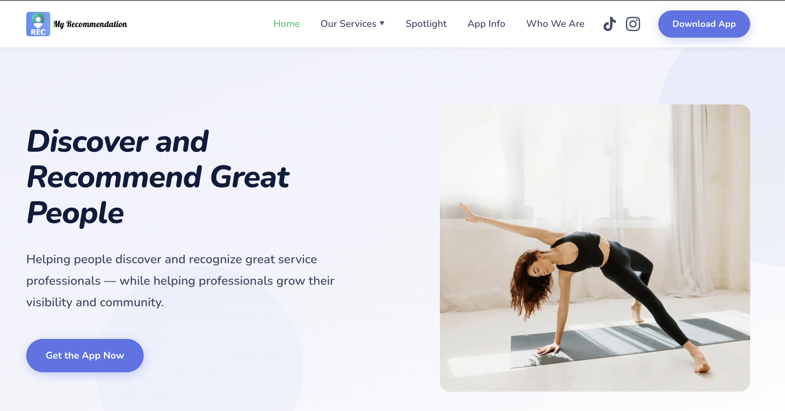
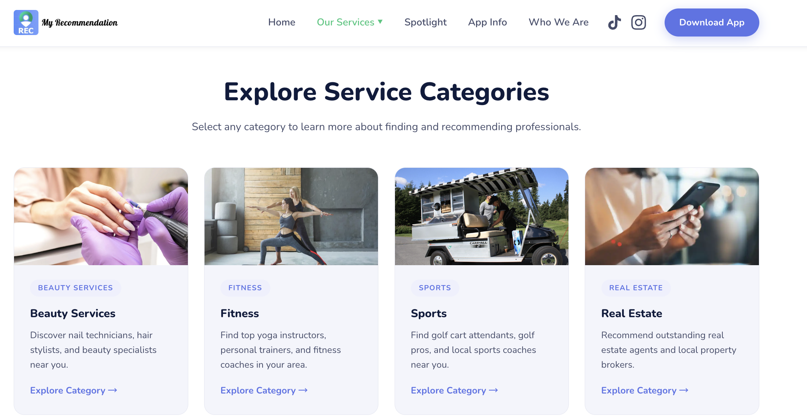
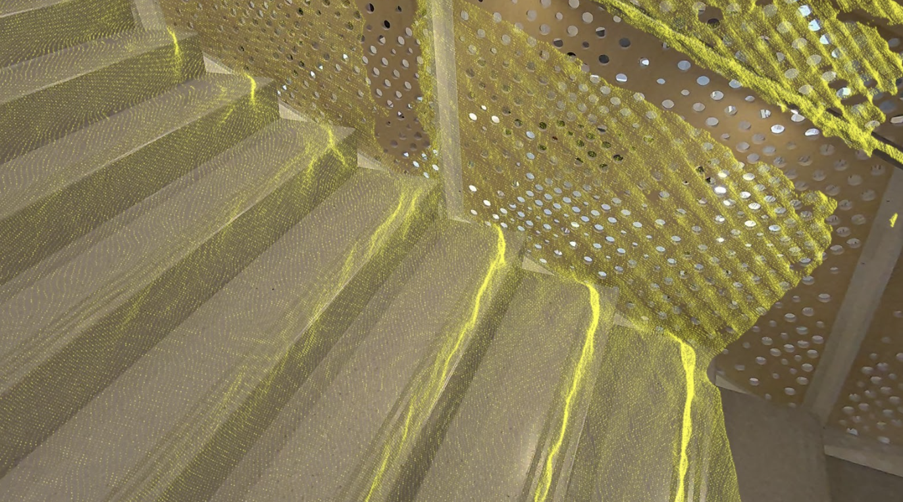
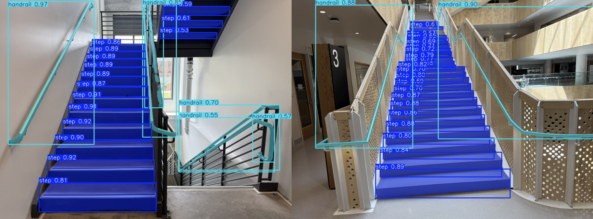
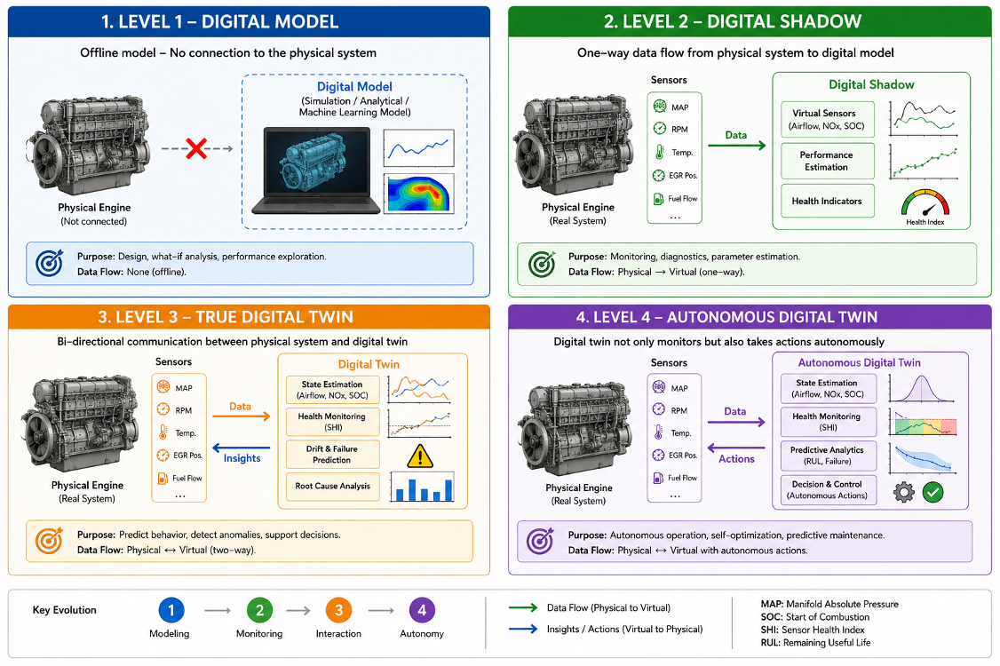
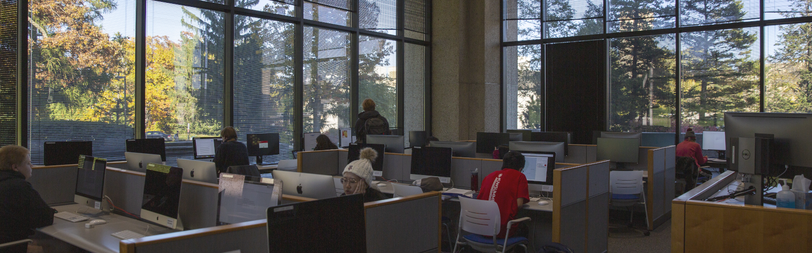
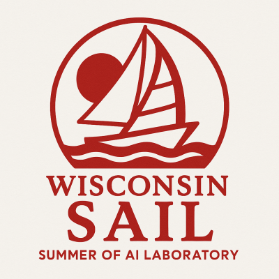
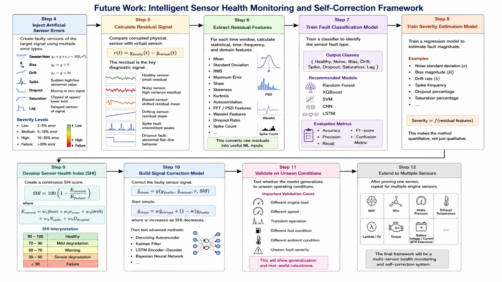
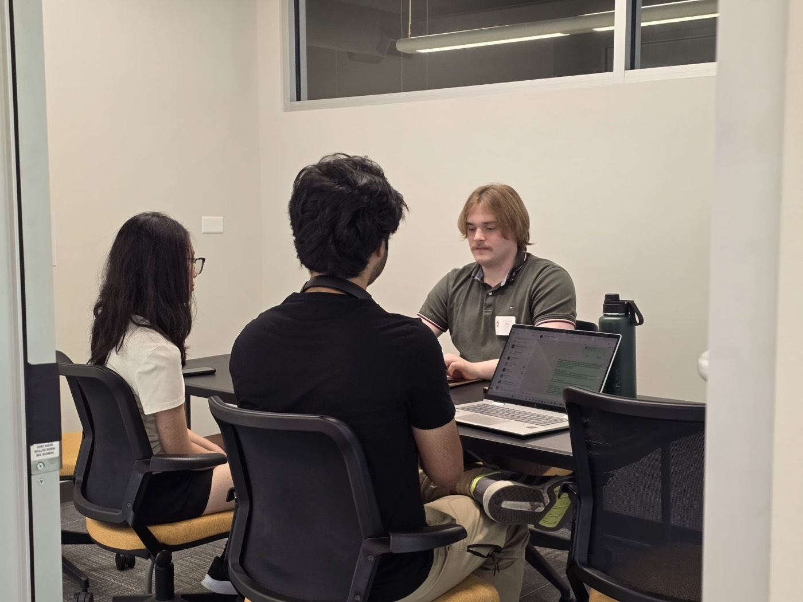
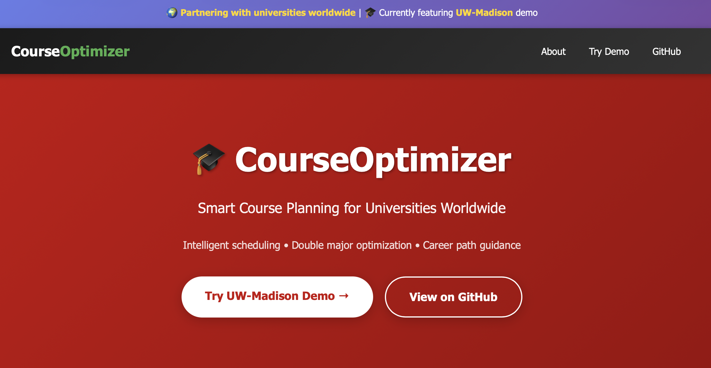

What I care about
I like technical work that combines strong reasoning with real-world usefulness. My interests sit around machine learning systems, HCI accessibility, data-intensive analysis, and security-oriented infrastructure.
Computer Science · UW-Madison
I build with machine learning, research, cybersecurity, and practical software systems.
I’m a computer science student at the University of Wisconsin-Madison with a strong interest in technically rigorous work that still feels clean, useful, and well designed.
I like technical work that combines strong reasoning with real-world usefulness. My interests sit around machine learning systems, HCI accessibility, data-intensive analysis, and security-oriented infrastructure.
Right now I'm balancing research, engineering, and operational support. That means building models, working on accessible interaction ideas, and staying grounded in real technical systems and user needs.
Selected for the Summer of AI Laboratory (SAIL) program at UW-Madison, sponsored by the College of Computing & Artificial Intelligence and supported by OpenAI. Over the course of this program, I will be collaborating with peers and industry mentors to design and build innovative, real-world AI applications.
Attended the 2026 Central State Section The Combustion Institute (CSSI) at Purdue University, exploring advanced topics in combustion field.
Presented "Machine Learning-Based Virtual Sensor for Automotive Engine Combustion Monitoring" poster at the UW-Madison Undergraduate Research Symposium and received Certificate of Recognition for outstanding design and scholarly communication (April 2026).
Working with mentor on AR/VR systems for low vision accessibility using Meta Quest 3 and Intel RealSense D455.
Lead the design and development of end-to-end features for the REC application, a mobile platform connecting users through shared interests, optimizing core user journeys from onboarding to recommendation delivery.
Conducted comprehensive code quality audits and systematic repository refactoring, which resolved critical UI/UX bottlenecks and improved app load times. Managed the complete software lifecycle, including regression testing, continuous integration, and App Store deployment pipelines, while mentoring junior engineers and creating onboarding documentation.


Design and evaluate intelligent interaction systems for low-vision users in augmented and virtual reality (AR/VR) environments.
Supported accessibility-focused Human-Computer Interaction (HCI) research by conducting literature reviews, structuring user studies, and building prototypes. Developed accessibility interfaces on Meta Quest 3 and Intel RealSense hardware, investigating how spatial audio and computer vision cues can assist visually impaired users in spatial navigation.


Analyze and mitigate security incidents across the university’s network infrastructure, triaging potential threats and coordinating department-wide incident response.
Leveraged automated security orchestration tools to monitor enterprise-scale playbooks, identifying indicators of compromise (IOCs) and malicious URLs. Conducted forensic analysis of endpoints by cross-referencing MAC addresses, hostnames, and DHCP logs to identify compromised campus assets and isolate threats.
Conducted machine learning research on virtual sensing architectures for automotive power systems, resulting in an award-winning technical paper.
Formulated a unified deep learning model to estimate engine combustion states and NOx emissions. Collaborated with mechanical engineering faculty to preprocess real-world engine sensor datasets, design neural architectures, and validate predictions against classical regression baselines, culminating in winning the Central State Section of The Combustion Institute Undergrad Research Competition.


Managed IT support and systems maintenance for the College of Letters & Science, resolving multi-tier technical issues for faculty, staff, and students.
Troubleshoot critical network, hardware, and OS issues across Windows and macOS environments. Maintained the infrastructure and software configurations of academic labs, implementing regular diagnostics to minimize downtime and ensure seamless instructional operations.

Led development of an AI-powered sign language learning and recognition platform combining computer vision, machine learning, and wearable AR technology to make sign language learning interactive and accessible.
The platform uses hand landmark detection and gesture recognition to identify American Sign Language (ASL) gestures in real time. Learners receive immediate visual feedback while practicing signs, creating a more engaging and accessible learning experience.

Designed and developed a multi-target virtual sensing framework using a single artificial neural network (ANN) to replace multiple expensive physical sensors in a 12L 6-cylinder diesel engine.
Built using a shared-representation deep learning architecture, the model learns latent representations to simultaneously predict heterogeneous, non-linear thermodynamic parameters (MF_IA, NOx_EO, SOC) in real time. The framework achieved high test accuracy (R² > 0.98 for all targets) across 217 engine operating points.

Designed a spatial computing solution for industrial manufacturing environments during a one-day interdisciplinary startup ideathon, preserving equipment maintenance knowledge and reducing downtime.
Collaborated with a multidisciplinary team to commercialize Spatial Grounding and Awareness for Augmented Reality (SGA-AR) in industrial spaces, enabling spatial anchoring of machinery documentation directly onto physical assets.

Research project focusing on accessibility in immersive environments, utilizing depth-sensing cameras and spatial computing to assist low-vision users with real-world navigation.
Developed spatial intelligence prototypes that capture 3D environments and translate them into multi-modal cues (audio, haptics) for users. Investigated spatial layout grounding algorithms and user-testing protocols to ensure interfaces degrade gracefully under vision impairments.
Developed an iterative diffusion-based image generation framework featuring a closed-loop feedback mechanism for precise, localized image editing.
Built in PyTorch, the system utilizes latent representations and cross-attention maps to identify target editing regions. By integrating a multi-stage feedback loop, users can progressively refine generated images through natural language prompts, resolving typical drift issues in single-step generation.
Built an interactive schedule optimization application at the Badger Build Festival to help university students build conflict-free course schedules.
Developed a search and filter system that runs constraint-satisfaction logic client-side in JavaScript. The tool parses course timings, prerequisites, and workload metrics, presenting students with a visual calendar dashboard and alternative schedule configurations.

Conducted a statistical and machine learning study analyzing socioeconomic factors and their correlations with human survival outcomes across ten large-scale datasets.
Performed rigorous data cleaning, missing value imputation, and exploratory data analysis using Pandas and Seaborn. Trained and evaluated multiple classification models, including Artificial Neural Networks (ANNs) and logistic baselines, comparing performance using area-under-the-curve (AUC) and receiver-operating-characteristic (ROC) metrics.
Python, Java, JavaScript, HTML5, CSS3
React, FastAPI, Git, GitHub, VS Code, PyTorch
Pandas, NumPy, Matplotlib, Seaborn, Scikit-learn, ANNs
Cybersecurity, HCI, accessibility, computer architecture, AI tooling
Exploring technical books, research papers, and fiction
Watching movies ranging from classics to horror films
Listening to diverse genres and discovering new artists
Visiting art galleries and cultural exhibitions
Hover over or tap a book spine to reveal insights.
Hover or tap on a book above to inspect details.
Hover or tap a frame to view filmmaker details.
Bong Joon-ho (2019)
Stanley Kubrick (1980)
Hayao Miyazaki (2001)
Mervyn LeRoy (1956)
Hover or tap the translucent bubbles to reveal popular tracks.
The Weeknd
The Weeknd
Queen
Ed Sheeran
Visiting historical galleries, computing exhibits, and classical museums.
Appreciating neoclassical oil paintings, neoclassical sculptures, and historical artifacts.
Fascinated by mechanical computation history, structural physics setups, and structural engineering marvels.
For research, engineering, internships, or collaboration, you can reach me here.